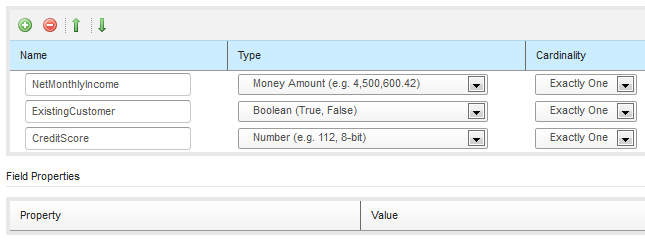
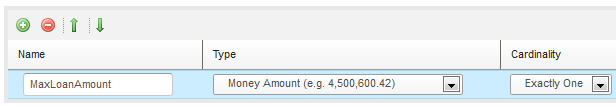
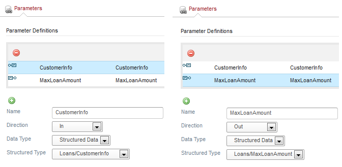
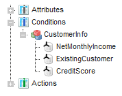
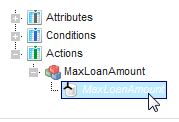
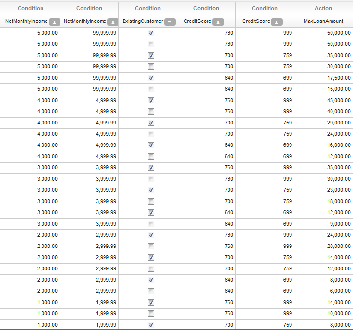
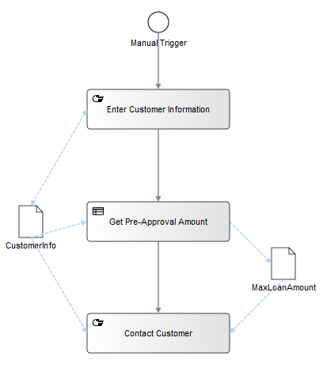

Stardust provides Business Rules Management for defining rules to maintain business logic separately from application code. A business rule defines actions that are performed when certain conditions are satisfied in the input data. Using rules enhances process efficiency in terms of validation, completeness and readiness. Business analyst can easily define and change such rules.
Common use cases for business rules could be simple scenarios like validating user input and creating corresponding error messages as well as more complex business processes like:
and many more.
In a Stardust process modeling scenario rules can be used where a set of rules may contain complex process data such as:
These could be business rules like one of the following:
These rules may result in changes on the same or other process data such as
The results may drive further execution of the process.
You need to download our prepared ipp-engine-rules.jar to use the Rules Management feature. To download this jar file you need to register here for a trial account:
Note that after registration of a new account it takes a while until it has been processed. Compliance with US export regulations needs to be ensured. Once you have an account you can procure a free 90 day trial license. As part of the procurement you will be granted access to our Maven repository https://infinity.sungard.com/repository, from where you can download the jar:
Rules are usually used when the business analyst is not focusing on one big transformation, but likes to add rules successively based on changed or enhanced business requirements or defining decision. This provides separation of concerns and allows to extract business logic from the workflow.
Using Stardust rules you have the option to:
Solutions to difficult problems can easily be provided and consequently be verified. Rules are easier to read than code and thus more understandable by non-technical users like business analysts as the impact on the rest of the application is easier to overlook for rules than for a complete program.
Rules execution differs from Message Transformations in Message Transformations are executed by performing all mappings between input and output data in a strict order, whereas rules are executed based on data content and priority.
The Stardust Portal Rules Management perspective allows to define and manage business rules as decision tables or rules composition. It provides the ability to:
Refer to section Managing Business Rules in the Stardust Portal documentation for details.
Stardust rules management provides the option to assemble technical rules and decision tables in Rule Sets. In these Rule Sets data can be specified as parameters for in- and output in the contained rules and decision tables.
The type system of all Structured Data Types specified on Stardust Process Models as well as primitive data can be specified for the Rules Set Data.
The set of Input and Output data is explicitly defined applying to the following concept:
The Rules Management Perspective supports easy creation of Decision Tables. The Decision Table format is intuitive for business analysts and consists of:
You can add more technical or complex rules to a rule set, which you can edit in a Rule editor. This editor is based on the Ace editor and provides the following functionality for creating and editing technical rules:
The Modeling perspective provides a Rule Task type that can implement rule sets defined in the Rule Manager perspective. The Rule Task invokes the rules and decision tables pertaining to the rule set. It computes values in the underlying data set. Its result can also be used in subsequent gateways for making decisions. For details on this task type refer to section Rule task implementation of chapter Specifying Activity Properties in the Business Process Modeling Handbook.
The following example demonstrates a use case where rules are required for a pre-approval scenario and how they can be specified in a Stardust environment.
A bank wants to implement automated rules to pre-approve unsecured loans. These rules are:
| Credit Score | Multiplier |
|---|---|
| Excellent (>760) | x10 |
| Good (700-759) | x6 |
| Fair (640 - 699) | x3 |
To create such a scenario in the Stardust Portal, we use a rule set with a decision table. For details on creating rule sets and adding rule set parameters, refer to chapters Managing Rule Sets and Editing Rule Sets Properties in the Stardust Portal guide.
Rules conditions and actions used in Decision tables are based on data parameters. To specify types for input data to be used as rules conditions and output data to write the result to in the action column, we prepare a model providing the according structured data types.


In the Rules Management perspective, we create a Rule set using the structured data types as In and Out parameters:

Figure: Rules Parameters
Now we create a decision table to apply the rules for the pre-approval scenario. For details on creating decision tables refer chapter Creating and Managing Decision Tables.
As condition columns we select all In data that is needed to set up our rules:

Figure: Select conditions
As action column, we choose MaxLoanAmount to write the calculated result to.

Figure: Select action
To specify the ranges for the NetMonthlyIncome and CreditScore columns, we set operators and accordingly. For details refer to section Setting Operators in the Table Header of chapter Creating and Managing Decision Tables.
Now enter values in the table cells of the Condition columns and the resulting value according to the rules in the Action column. The following Decision table shows an example with possible values:

Figure: Decision Table
To use the specified Rule Set in a process, add a Rule Task that implements the Rule Set. For details on working with Rule Tasks, refer to section Rule task implementation of chapter Specifying Activity Properties in the Business Process Modeling Handbook.
A Structured Data of type CustomerInfo can be used to enter the required customer data in a manual activity and transfer them to the Rule Task using the specified rule set. The Rule Task determines the value for MaxLoanAmount as output.

Figure: Process with Rule Task